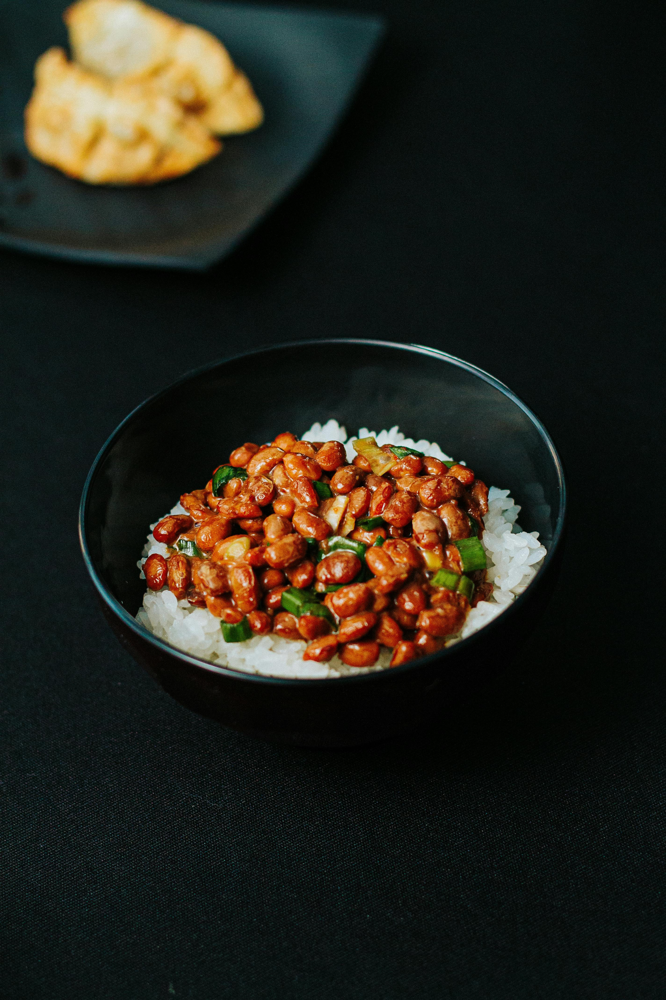

Red Beans and Rice

Description
A simple red bean and rice dish using canned beans and packaged sasuage. This dish cuts down on time and complexity while persivering flavor.
Ingredients
- 2 cups water
- 1 cup rice
- 16 oz of sausage links
- 1 onion
- 1 green bell pepper
- 1 clove garlic
- 2 cans kindey beans
- 1 large can of whole pealled tomatoes
- add washed rice and water to sauce pan
- bring pan to a biol
- cover and reduce heat
- while rice is cooking cut garlic,onion, and pepper
- suate onion and garlic in pan until franget
- add sausge and peppers in and cook till browned and tender then set aside
- in the same pan put the two drained cans of beans in on medium high
- add in the can of tomatoes and let it come to a boil
- add back in the peppers and sausage
- let it reduce untill the rice is done
- plate and enjoy
Home